Additional Statistics for french computer science academia
We first provide a few statistics around gender bias in computer science in French academia (so-called section 27 of the CNU), based on publicly available data.
Conclusions:
- significant efforts are required on the hiring side
- there is a biased and probably unfair task distribution
- their may be some specific pressure w.r.t. productivity put on women during their thesis
⚠ Warning
To discuss and reflect on those issues, it is crucial to consider also the question of gender-based violence, which is notably demonstrated to make women more likely to leave academia than men, and is probably one of the biggest factor to fight against. This page focuses on aggregating publicly available data, to make easily available, and also show that other kind of statistical bias are present and that actions at many different levels are required.
Hiring practices
Highlights:
- When considering the total population (MCF + PU), we are stuck and not making any significant progress.
- It is worse for more competitive positions (CR, DR, PU), where we are way below the proportion of potential candidates.
- There is only a slight improvement on the CNRS side, while CR INRIA is worsening.

Bias around PhD
Highlights for people in section 27:
- Men supervise more than women (about 1.5 times more on average, and 60% of women don’t supervise vs 45% of men). The effect holds for both PU or MCF.
- Women are more often jury member for thesis, but in addition the global repartition whithin women is very bad, where a lot of pressure is put on a few of them. The effect is most striking for PU, but also holds for MCF.
- Women’s PhD thesis (in number of pages) are slightly longer than men (on average 7 pages longer out of 180).
⚠ Warning
This part is a self-made study, see Methodology section below for limitations, results are preliminary.
Effect 1 and 2 appear specific to section 27, and disappears when we consider all jury members of computer science related thesis, thus including international people/CNRS/INRIA. This means a specific attention should be given to this in our universities: how are different task distributed? Are some women asked and pushed to be in jury too much? Are women teaching more than men, and left without time for supervision? Are people with HdR offering to co-supervise with women without HdR less than men without HdR?
Effect 3 may imply that explicit or implicit pressure is put on women to produce more, to “make them prove that they belong”. More research would be needed to explain this phenomenon, but we can still be on the lookout for its consequences.
The plots below are density functions (the area below the lines sum to 1). On the first one, we for instance see that way more women than men in proportion never do any thesis jury (the red bar is bigger than the purple one at 0), and that the last decile is way higher for women. For each effect, we put the most striking graph first.
Effect 1 graphics
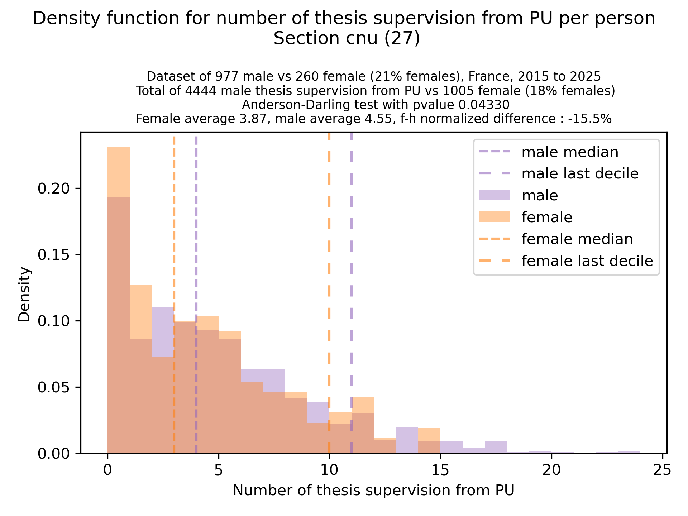 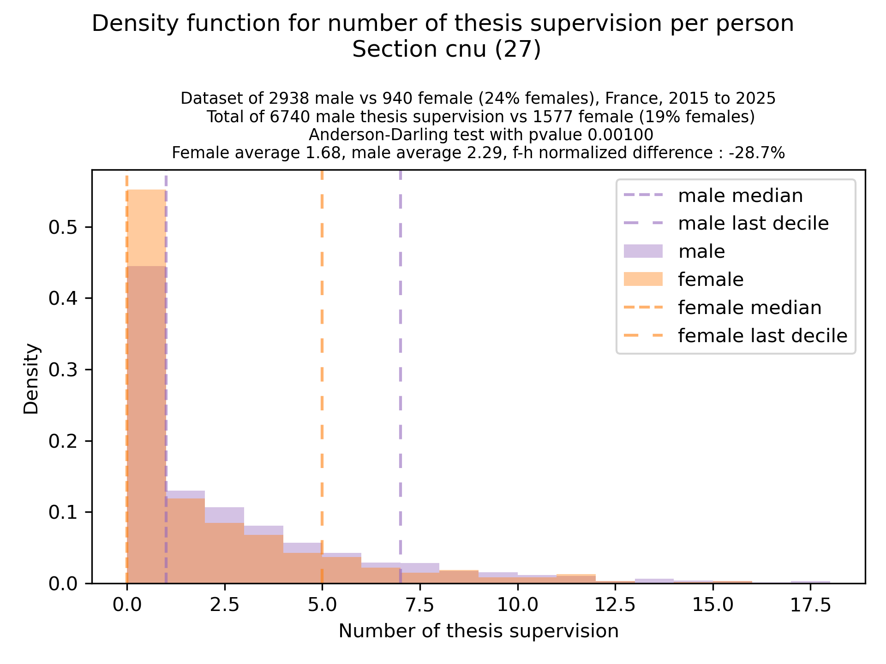 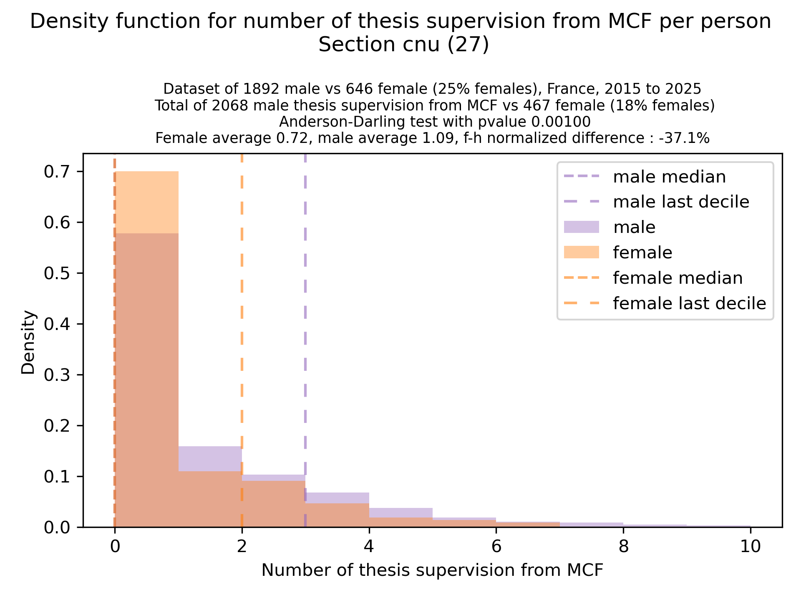
Effect 2 graphics
 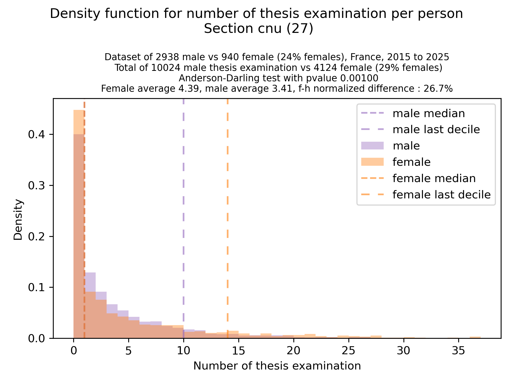 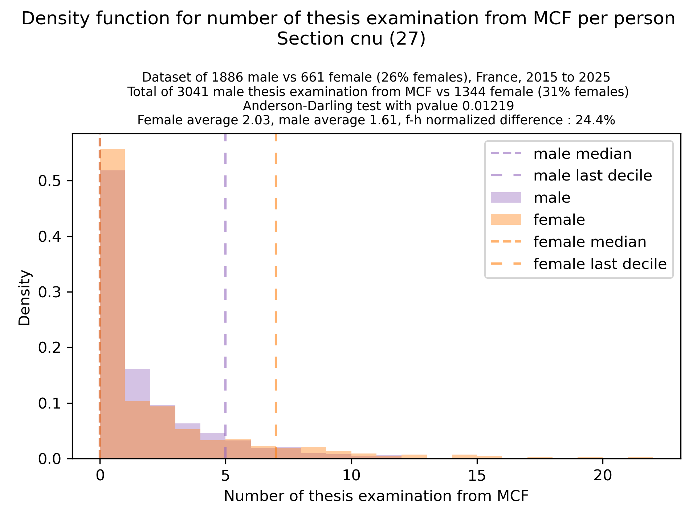
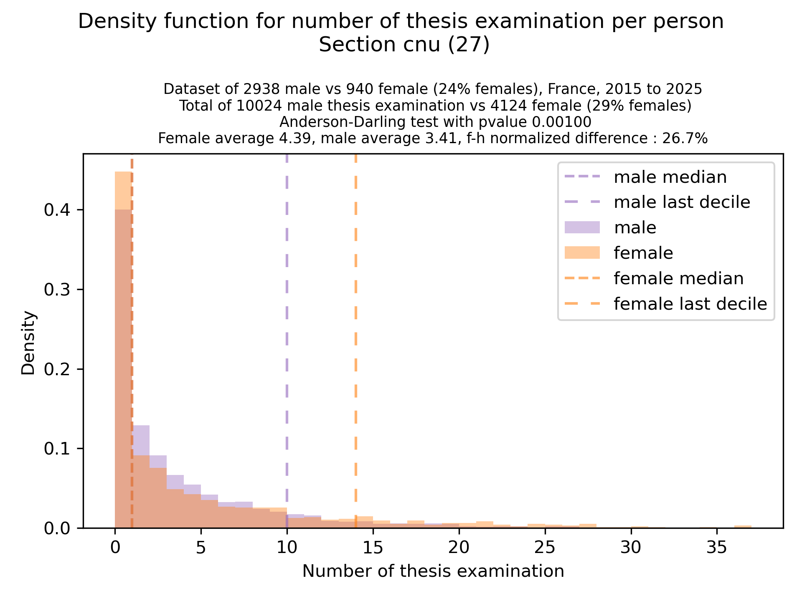 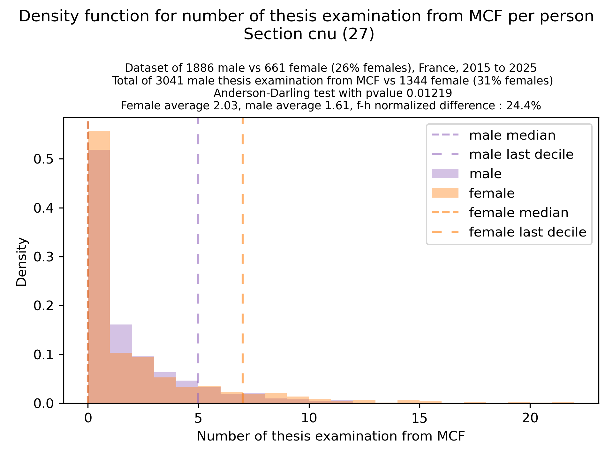
Effect 3 graphics
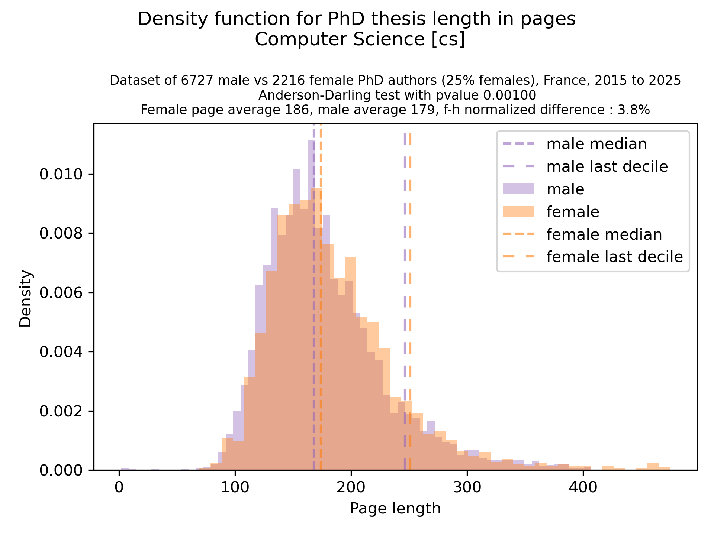
Hiring committees for computer science and maths
The french law for hiring committees enforces a 40% proportion of women. So, as expected, we see an unfair burden on women. However, across all sections, we observe an unfair repartition whitin women, with too much pressure put on too few women. The effect is most striking for PU in sec 25 and 26, and more reasonable for section 27. However, note that for section 27, the results are very innacurate (see Methodology below), almost half of the data is missing, which could fully invisibilize the targetted effect.
Graphs ordered from most striking to less striking unfair repartition
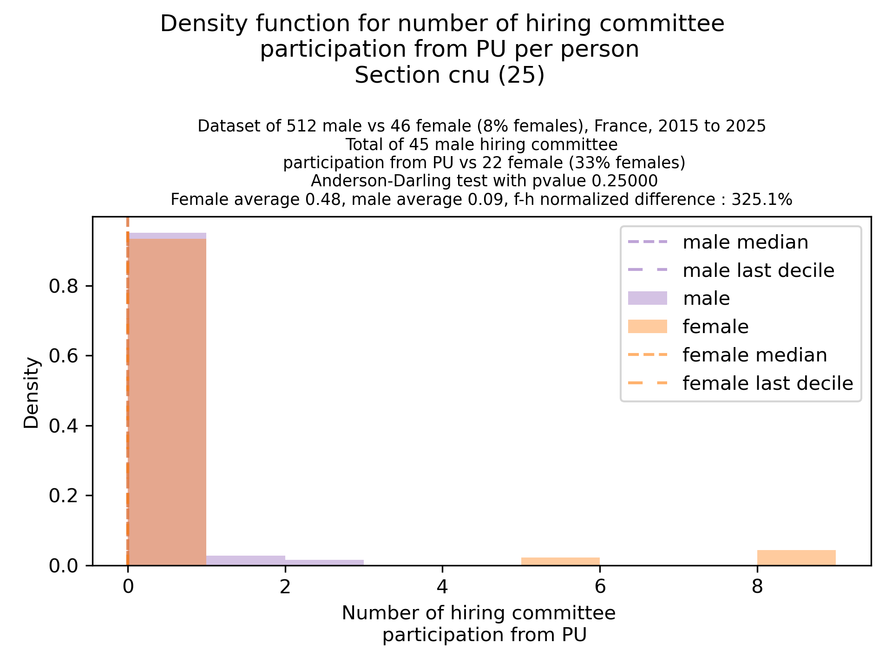 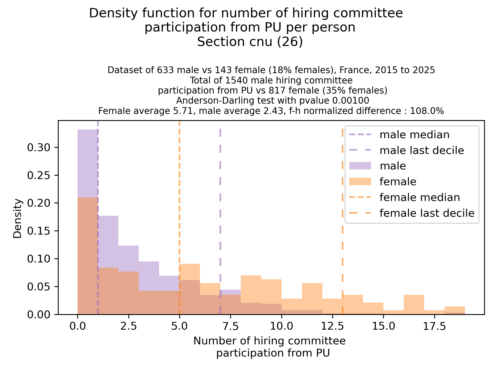 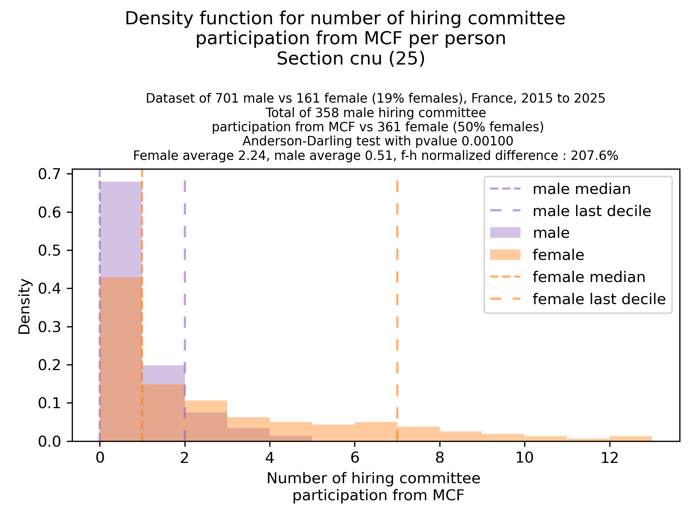
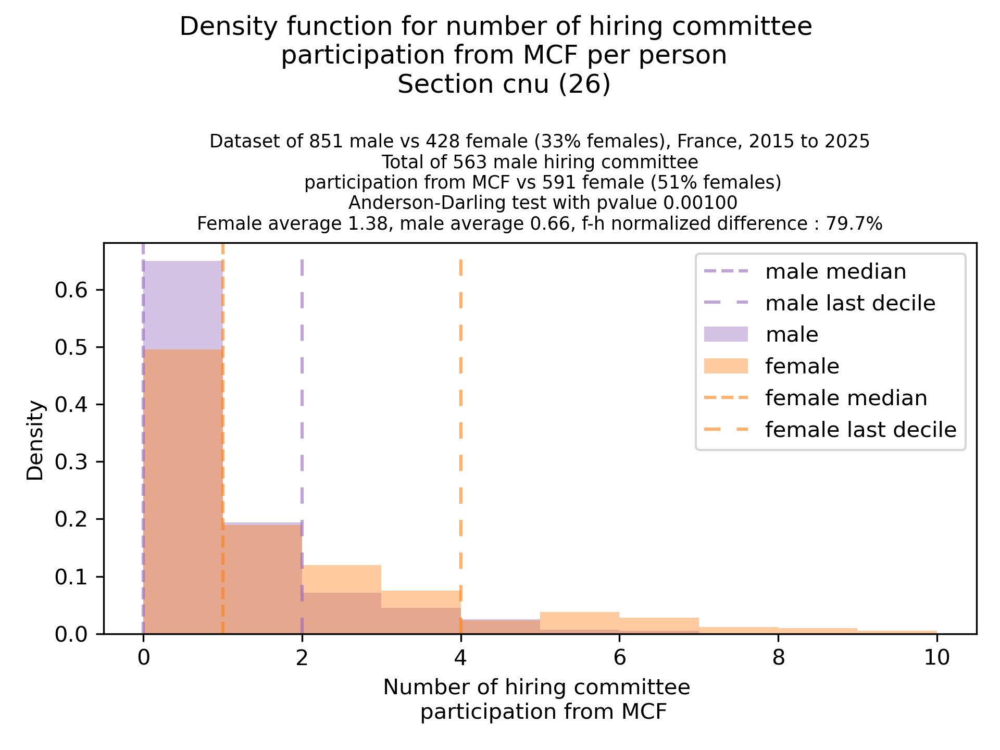 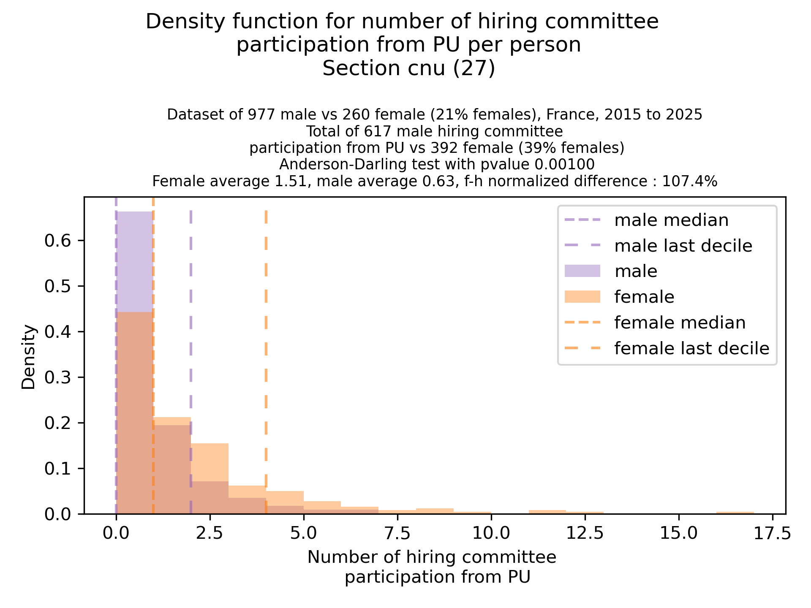 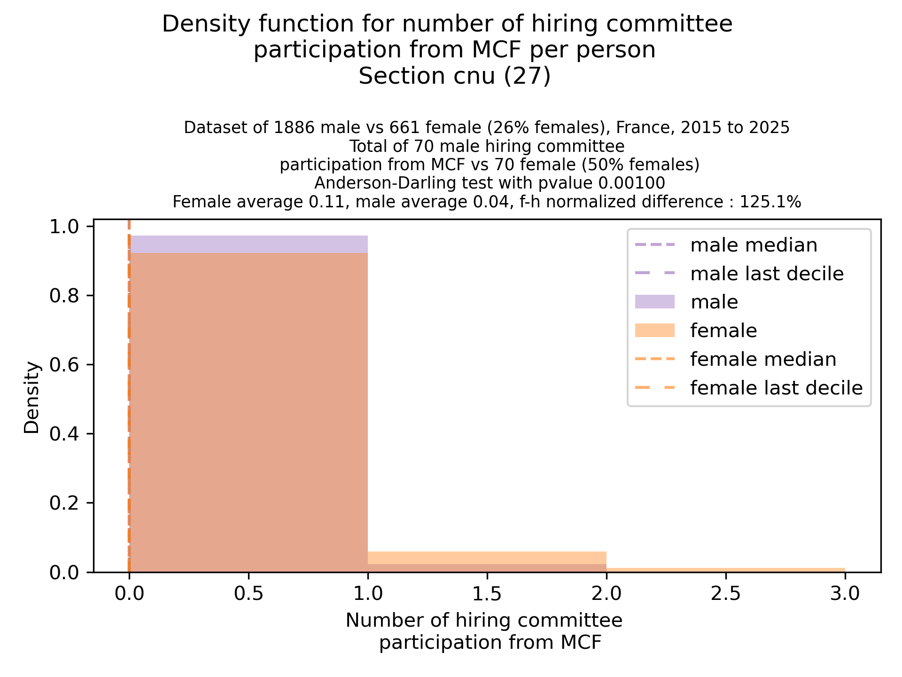
Methodology
MCF/PU positions
For MCF/PU positions, data was aggregated from the “Fiches démographiques des sections du Conseil national des universités (CNU)” for section 27, for INRIA, from the “Rapport Social Unique” 2022 and 2023, for CNRS, from “Rappor de conjoncture” 2018 and 2025.
Thesis
For PhD thesis gender/length/review/supervisions, data was scrapped from theses.fr and theses.hal.science/, supported with the electoral body of section 27 of 2019 and 2024 (which also contains the gender). Some errors are very likely to be contained, but for checkable data, data is consistent.
Notably, gender is mostly guessed using an INSEE database of name popularity w.r.t. gender in France. For CNU 27 people, gender was correctly guessed (comparing with the one from the electoral body) with above 95% probability.
For linking a name from the electoral body listing to a theses.fr identifier, we match by full name and use for homonyms the person with the most activity as a link. For women that may take their husband names upon mariage, we lose precision, and we notice that at the PU rank, we don’t find matches for ~28% of PU women, vs ~15% for PU men (similar accross sec 25,26,27). For PU in sec 27, we did a manual pass to match more people, and reached a similar ratio as for men. This only affected the bar at 0 of corresponding graphs, keeping the rest of the distribution shape similar. At MCF rank, there is not significant difference in loss between male/females.
A PhD thesis was considered to belong to section 27 if at least one of the director is inside the section.
Several bias/limitations are present:
- gender is guessed and there is clearly room for error. In particular, the error rate will be higher for names which are rare in France.
- the scrapped websites are not consolidated, and the link with section 27 has to be made manually. E.g, domain is an arbitrary string for theses.fr, theses.fr contains some redundant profile, and people sometimes have a unique id identifier, sometimes not. Some people with an id are not always linked to the id.
Data would need to be manually inspected based on random sampling to increase trust in the results. Some statistically significant bias would require a quantitative analysis to identify the origin.
Hiring committees
We used the electoral body of section 25,26 and 27 of 2019 and 2024, which contains the gender. In addition, we used the grassroot effort of registering committees at http://postes.smai.emath.fr
Note that in section 27, the proportion of unregistered committees (for which we don’t know the set of committee members), is 52%, vs 8% for 25 and 13% for 26. Hence, for section 27, the absolute value are very much far away from the truth.
In addition, the committees member list are not at all formated in a consistent way. For each cnu member, we counted how many time either “firstname surname” or “surname firstname” occured in those inconsistenly formatted lists. Many data points are probably missed, but this should not introduce any gender bias.
Final comments
For people willing to contribute to the exploration of potential biases, all scripts used to build the databases and the databases themselves can be found at (https://github.com/not-in-our-labs/workpace/tree/main/?tab=readme-ov-file) (in a messy state)
Additional questions to explore based on the available data:
- is there a bias w.r.t. cosupervisions?
- is there a bias w.r.t. to thesis length in years?
- is there a bias w.r.t. to unfinished thesis? (unclear if theses.fr gives this data though)
- ?